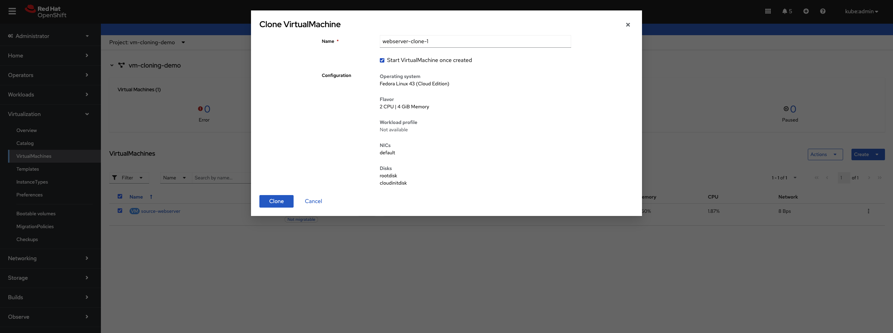

Cloning Virtual Machines for Rapid Deployment
Overview
This tutorial demonstrates how to clone existing virtual machines in OpenShift Virtualization to rapidly deploy identical or customized VM instances. VM cloning creates copies of existing VMs with their entire disk contents, configurations, and installed software, enabling fast environment provisioning.
What is VM Cloning?
VM cloning creates a new virtual machine by duplicating an existing VM. OpenShift Virtualization provides two main methods for cloning:
-
Web console cloning: Simple point-and-click interface for cloning VMs
-
CLI-based cloning: Manual process of cloning PVCs and creating new VMs
Key benefits of VM cloning:
-
Rapid deployment of pre-configured environments
-
Consistent software and configuration across instances
-
Accelerated development and testing workflows
-
Quick scale-out for identical workloads
-
Reduced time from deployment to production-ready state
Cloning vs Golden Images
While both approaches enable rapid VM deployment, they serve different purposes:
| Aspect | VM Cloning | Golden Images |
|---|---|---|
Use Case |
Duplicate specific VM with all its data and state |
Template for many VMs with standardized configuration |
Customization |
Clones retain source VM data, can customize with cloud-init |
Each VM starts fresh from template |
Data Preservation |
Preserves all data from source VM |
Only contains base configuration |
Source State |
Can clone from running or stopped VM |
Source is a prepared, generalized image |
Typical Scenario |
Clone a configured dev environment for testing |
Deploy multiple web servers with same base setup |
Prerequisites
-
OpenShift 4.18+ with OpenShift Virtualization operator installed
-
Access to OpenShift web console or CLI tools:
oc,virtctl -
Storage class that supports volume cloning
-
At least one VM to clone from (or we’ll create one)
-
Basic understanding of PersistentVolumeClaims (PVCs)
Understanding Cloning Methods
OpenShift Virtualization provides two approaches for cloning VMs:
Web Console Cloning (Recommended)
The web console provides a streamlined cloning experience:
-
Automatically handles PVC cloning
-
Creates new VM with cloned disk
-
Supports cloning from running or stopped VMs
-
Preserves VM configuration (CPU, memory, network)
Cloning VMs Using the Web Console
The web console is the simplest method for cloning VMs.
Setup: Create Source VM
First, create a namespace and source VM:
oc create namespace vm-cloning-demoDeploy a source VM with nginx pre-installed:
apiVersion: kubevirt.io/v1
kind: VirtualMachine
metadata:
name: source-webserver
namespace: vm-cloning-demo
spec:
dataVolumeTemplates:
- apiVersion: cdi.kubevirt.io/v1beta1
kind: DataVolume
metadata:
name: source-webserver-disk
spec:
sourceRef:
kind: DataSource
name: fedora
namespace: openshift-virtualization-os-images
storage:
resources:
requests:
storage: 30Gi
runStrategy: RerunOnFailure
template:
metadata:
labels:
kubevirt.io/domain: source-webserver
spec:
domain:
cpu:
cores: 2
devices:
disks:
- disk:
bus: virtio
name: rootdisk
- disk:
bus: virtio
name: cloudinitdisk
interfaces:
- masquerade: {}
name: default
rng: {}
machine:
type: pc-q35-rhel9.4.0
memory:
guest: 4Gi
networks:
- name: default
pod: {}
volumes:
- dataVolume:
name: source-webserver-disk
name: rootdisk
- cloudInitNoCloud:
userData: |-
#cloud-config
user: fedora
password: fedora123
chpasswd: { expire: false }
ssh_pwauth: true
runcmd:
- dnf install -y nginx
- systemctl enable --now nginx
- echo "<h1>Source Webserver VM</h1><p>Hostname: $(hostname)</p>" > /usr/share/nginx/html/index.html
- firewall-cmd --permanent --add-service=http
- firewall-cmd --reload
name: cloudinitdiskDeploy the source VM:
oc apply -f source-webserver-vm.yamlWait for the VM to be running:
oc get vmi -n vm-cloning-demoClone Using Web Console
To clone a VM using the OpenShift web console:
-
Navigate to Virtualization → VirtualMachines

-
Locate the VM you want to clone (
source-webserver) -
Click the ⋮ (Actions menu) next to the VM
-
Select Clone

-
In the Clone VirtualMachine dialog:
-
Enter a name for the new VM (e.g.,
webserver-clone-1) -
Optionally check Start VirtualMachine once created to start it immediately
-
Review the configuration details (Operating system, CPU, Memory, NICs, Disks)
-
-
Click Clone

The web console will:
-
Clone the source VM’s PVC
-
Create a new VM with the cloned disk
-
Preserve the VM’s configuration (CPU, memory, networks)
-
Start the VM if you selected that option
Monitor the clone progress in the VirtualMachines list. The clone will show "Provisioning" until the PVC clone completes.

Cloning VMs Using the CLI
For automation, customization, or cross-namespace cloning, use the CLI method.
Method 1: Clone PVC, Then Create VM (Recommended)
This is the recommended CLI approach. First, identify the source VM’s PVC:
oc get pvc -n vm-cloning-demoOutput shows:
NAME STATUS VOLUME CAPACITY ACCESS MODES STORAGECLASS AGE
source-webserver-disk Bound pvc-1234abcd-5678-efgh-9012-ijklmnop3456 30Gi RWO lvms-vg1 10mCreate a standalone DataVolume that clones the source PVC:
apiVersion: cdi.kubevirt.io/v1beta1
kind: DataVolume
metadata:
name: webserver-clone-2-disk
namespace: vm-cloning-demo
annotations:
cdi.kubevirt.io/storage.bind.immediate.requested: "true" (1)
spec:
source:
pvc:
name: source-webserver-disk
namespace: vm-cloning-demo
storage:
accessModes:
- ReadWriteOnce
resources:
requests:
storage: 30Gi
storageClassName: gp3-csi (2)| 1 | Required for storage classes with WaitForFirstConsumer binding mode |
| 2 | Specify the storage class (optional, will inherit from source PVC if omitted) |
The cdi.kubevirt.io/storage.bind.immediate.requested: "true" annotation is critical for storage classes that use WaitForFirstConsumer binding mode (like AWS EBS gp3-csi, Azure Disk, etc.). Without this annotation, the DataVolume will remain in PendingPopulation state until a VM tries to consume it.
|
Apply the DataVolume:
oc apply -f clone-datavolume.yamlMonitor the clone progress:
oc get dv webserver-clone-2-disk -n vm-cloning-demo -wYou’ll see phases like:
NAME PHASE PROGRESS RESTARTS AGE
webserver-clone-2-disk CloneFromSnapshotSourceInProgress N/A 4s
webserver-clone-2-disk PrepClaimInProgress N/A 68s
webserver-clone-2-disk RebindInProgress N/A 78s
webserver-clone-2-disk Succeeded 100.0% 79sOnce the DataVolume shows Succeeded, create a VM that uses the cloned disk:
apiVersion: kubevirt.io/v1
kind: VirtualMachine
metadata:
name: webserver-clone-2
namespace: vm-cloning-demo
spec:
runStrategy: Manual
template:
metadata:
labels:
kubevirt.io/domain: webserver-clone-2
spec:
domain:
cpu:
cores: 2
devices:
disks:
- disk:
bus: virtio
name: rootdisk
interfaces:
- masquerade: {}
name: default
rng: {}
machine:
type: pc-q35-rhel9.4.0
memory:
guest: 4Gi
networks:
- name: default
pod: {}
volumes:
- name: rootdisk
persistentVolumeClaim:
claimName: webserver-clone-2-diskApply the VM:
oc apply -f vm-from-cloned-pvc.yamlStart the VM:
virtctl start webserver-clone-2 -n vm-cloning-demoMethod 2: Clone Entire VM (Alternative Approach)
| This approach requires manual editing and is not the recommended method. Use Method 1 above for a more reliable and easier-to-troubleshoot workflow. |
Stop the source VM for a clean clone:
virtctl stop source-webserver -n vm-cloning-demoWait for the VM to stop:
oc get vm source-webserver -n vm-cloning-demoExport the source VM configuration:
oc get vm source-webserver -n vm-cloning-demo -o yaml > clone-base.yamlEdit clone-base.yaml to create a clone. You need to make the following changes:
1. Change the VM name:
metadata:
name: source-webserver # Change to: webserver-manual-clone
namespace: vm-cloning-demo2. Update DataVolume name and add PVC source:
spec:
dataVolumeTemplates:
- apiVersion: cdi.kubevirt.io/v1beta1
kind: DataVolume
metadata:
name: source-webserver-disk # Change to: webserver-manual-clone-disk
spec:
# Remove the original sourceRef section
# Add this instead:
source:
pvc:
name: source-webserver-disk
namespace: vm-cloning-demo
storage:
resources:
requests:
storage: 30Gi3. Update labels and domain name:
spec:
template:
metadata:
labels:
kubevirt.io/domain: source-webserver # Change to: webserver-manual-clone
spec:
domain:
# ... rest of config
volumes:
- dataVolume:
name: source-webserver-disk # Change to: webserver-manual-clone-disk
name: rootdisk4. Remove unnecessary fields:
Remove these metadata fields that are auto-generated:
* metadata.uid
* metadata.resourceVersion
* metadata.creationTimestamp
* metadata.generation
* status section (entire section)
5. Remove MAC addresses (IMPORTANT):
Remove the macAddress field from network interfaces to allow automatic allocation:
spec:
template:
spec:
domain:
devices:
interfaces:
- masquerade: {}
name: default
macAddress: "52:54:00:xx:xx:xx" # REMOVE THIS LINEIf you don’t remove the MAC address, you’ll get an error:
Failed to allocate mac to the vm object: failed to allocate requested mac address
After making these edits, apply the modified YAML:
oc apply -f clone-base.yamlCustomizing Cloned VMs with Cloud-init
Cloned VMs inherit all data from the source, including hostname and credentials. Use cloud-init to customize clones.
Clone with New Hostname and Password
Create a DataVolume clone (as in Method 2):
cat <<EOF | oc apply -f -
apiVersion: cdi.kubevirt.io/v1beta1
kind: DataVolume
metadata:
name: webserver-custom-disk
namespace: vm-cloning-demo
annotations:
cdi.kubevirt.io/storage.bind.immediate.requested: "true"
spec:
source:
pvc:
name: source-webserver-disk
namespace: vm-cloning-demo
storage:
accessModes:
- ReadWriteOnce
resources:
requests:
storage: 30Gi
EOFWait for clone to complete:
oc get dv webserver-custom-disk -n vm-cloning-demo -wCreate a VM with cloud-init customization:
apiVersion: kubevirt.io/v1
kind: VirtualMachine
metadata:
name: webserver-custom
namespace: vm-cloning-demo
spec:
runStrategy: Manual
template:
metadata:
labels:
kubevirt.io/domain: webserver-custom
spec:
domain:
cpu:
cores: 2
devices:
disks:
- disk:
bus: virtio
name: rootdisk
- disk:
bus: virtio
name: cloudinitdisk
interfaces:
- masquerade: {}
name: default
rng: {}
machine:
type: pc-q35-rhel9.4.0
memory:
guest: 4Gi
networks:
- name: default
pod: {}
volumes:
- name: rootdisk
persistentVolumeClaim:
claimName: webserver-custom-disk
- cloudInitNoCloud:
userData: |-
#cloud-config
hostname: webserver-custom
fqdn: webserver-custom.local
manage_etc_hosts: true
password: fedora123
chpasswd: { expire: false }
ssh_pwauth: true
runcmd:
- hostnamectl set-hostname webserver-custom
- echo "<h1>Customized Clone</h1><p>Hostname: $(hostname)</p>" > /usr/share/nginx/html/index.html
- systemctl restart nginx
name: cloudinitdiskThis cloud-init configuration:
-
Sets a new hostname (
webserver-custom) -
Sets password for the fedora user
-
Updates the nginx welcome page
-
Preserves nginx installation from the source VM
Apply and start:
oc apply -f cloned-vm-with-cloudinit.yaml
virtctl start webserver-custom -n vm-cloning-demoVerify customization:
virtctl console webserver-custom -n vm-cloning-demoInside the VM:
hostname
# Output: webserver-custom
systemctl status nginx
# Shows nginx is running (preserved from source)
curl localhost
# Shows custom HTMLCloning Across Namespaces
Clone VMs to different namespaces for environment separation (dev, test, prod).
Configure RBAC for Cross-Namespace Cloning
The service account in the target namespace needs permission to access PVCs in the source namespace:
apiVersion: rbac.authorization.k8s.io/v1
kind: Role
metadata:
name: datavolume-cloner
namespace: vm-cloning-demo
rules:
- apiGroups: [""]
resources: ["persistentvolumeclaims"]
verbs: ["get", "list"]
- apiGroups: ["cdi.kubevirt.io"]
resources: ["datavolumes"]
verbs: ["get", "list"]
---
apiVersion: rbac.authorization.k8s.io/v1
kind: RoleBinding
metadata:
name: allow-clone-from-demo
namespace: vm-cloning-demo
roleRef:
apiGroup: rbac.authorization.k8s.io
kind: Role
name: datavolume-cloner
subjects:
- kind: ServiceAccount
name: default
namespace: vm-cloning-productionApply RBAC:
oc apply -f cross-namespace-clone-rbac.yamlCreate Cross-Namespace Clone
Create a DataVolume in the production namespace that clones from the demo namespace:
apiVersion: cdi.kubevirt.io/v1beta1
kind: DataVolume
metadata:
name: webserver-production-disk
namespace: vm-cloning-production
annotations:
cdi.kubevirt.io/storage.bind.immediate.requested: "true"
spec:
source:
pvc:
name: source-webserver-disk
namespace: vm-cloning-demo
storage:
accessModes:
- ReadWriteOnce
resources:
requests:
storage: 30GiApply the DataVolume:
oc apply -f cross-namespace-clone-datavolume.yamlMonitor clone:
oc get dv -n vm-cloning-production -wCreate production VM:
apiVersion: kubevirt.io/v1
kind: VirtualMachine
metadata:
name: webserver-production
namespace: vm-cloning-production
labels:
environment: production
spec:
runStrategy: Manual
template:
metadata:
labels:
kubevirt.io/domain: webserver-production
spec:
domain:
cpu:
cores: 4
devices:
disks:
- disk:
bus: virtio
name: rootdisk
- disk:
bus: virtio
name: cloudinitdisk
interfaces:
- masquerade: {}
name: default
rng: {}
machine:
type: pc-q35-rhel9.4.0
memory:
guest: 8Gi
networks:
- name: default
pod: {}
volumes:
- name: rootdisk
persistentVolumeClaim:
claimName: webserver-production-disk
- cloudInitNoCloud:
userData: |-
#cloud-config
hostname: webserver-prod
fqdn: webserver-prod.production.local
manage_etc_hosts: true
password: fedora123
chpasswd: { expire: false }
ssh_pwauth: true
runcmd:
- hostnamectl set-hostname webserver-prod
- echo "<h1>Production Webserver</h1><p>Environment: Production</p>" > /usr/share/nginx/html/index.html
- systemctl restart nginx
name: cloudinitdiskKey differences for production:
-
Different namespace
-
More resources (4 cores, 8Gi RAM)
-
Production-specific labels
-
Sets password for access
-
Production-specific customizations
Apply and start:
oc apply -f cloned-webserver-production.yaml
virtctl start webserver-production -n vm-cloning-productionStorage Considerations
Clone Performance
Clone speed depends on your storage:
-
Smart cloning (CSI snapshots): Very fast, uses storage snapshots
-
Ceph RBD, AWS EBS, Azure Disk, GCP PD
-
Phase:
SnapshotForSmartCloneInProgress→SmartClonePVCInProgress
-
-
Host-assisted cloning: Slower, copies data through pods
-
Any storage class without snapshot support
-
Phase:
CloneInProgresswith progress percentage
-
Check which method is being used:
oc get dv <datavolume-name> -n <namespace> -o yaml | grep cloneTypeOutput:
cdi.kubevirt.io/cloneType: snapshot # Smart cloning
# or
cdi.kubevirt.io/cloneType: copy # Host-assisted cloningStorage Space Requirements
Each clone requires full storage allocation:
-
Clones are independent copies, not snapshots
-
Each clone needs storage equal to source volume size
-
Plan capacity: (number of clones × source volume size)
-
Check namespace quotas and storage class capacity
Verify available storage:
oc get sc
oc describe sc <storage-class-name>Verification and Troubleshooting
Verify Clone Completion
Check DataVolume status:
oc get dv -n vm-cloning-demoSuccessful clone shows Succeeded:
NAME PHASE PROGRESS AGE
webserver-custom-disk Succeeded N/A 5mCheck Clone Events
View clone events:
oc describe dv <datavolume-name> -n <namespace>Look for events showing clone progress:
Events:
Type Reason Age From Message
---- ------ ---- ---- -------
Normal CloneInProgress 5m datavolume-controller Cloning from vm-cloning-demo/source-webserver-disk in progress
Normal CloneSucceeded 2m datavolume-controller Successfully cloned from vm-cloning-demo/source-webserver-diskVerify Customizations
Access VM console:
virtctl console <vm-name> -n <namespace>Inside the VM:
# Check hostname
hostname
# Verify software from source VM
systemctl status nginx
# Check cloud-init status
cloud-init status
# View cloud-init logs
sudo cat /var/log/cloud-init-output.log
# Check machine ID (if customized)
cat /etc/machine-idCommon Issues and Solutions
Issue: Clone stuck in "Provisioning" or "CloneInProgress"
Problem: DataVolume shows CloneInProgress for extended time.
Possible causes: * Large source volume * Slow storage or network * Host-assisted cloning on large volumes
Solutions:
# Check clone events
oc describe dv <datavolume-name> -n <namespace>
# Check CDI pods
oc get pods -n <namespace> | grep cdi
# View CDI logs
oc logs <cdi-pod> -n <namespace>For large volumes, host-assisted cloning can take considerable time. This is expected.
Issue: Clone fails with "permission denied"
Problem: Cross-namespace clone fails with RBAC errors.
Solution: Verify RBAC permissions:
# Check role exists
oc get role datavolume-cloner -n <source-namespace>
# Check role binding
oc get rolebinding -n <source-namespace>
# Test permissions
oc auth can-i get pvc --as=system:serviceaccount:<target-namespace>:default -n <source-namespace>Output should be yes.
Issue: Cloned VM has same hostname as source
Problem: Clone boots with original hostname.
Solution: Add cloud-init configuration to the VM:
-
Ensure
cloudinitdiskvolume is defined -
Set
hostnamefield in cloud-init userData -
Use
runcmdto set hostname:hostnamectl set-hostname <new-name> -
Check cloud-init logs:
sudo cat /var/log/cloud-init.log
Issue: Storage quota exceeded
Problem: Clone fails due to insufficient storage quota.
Solution:
# Check quotas
oc get resourcequota -n <namespace>
oc describe resourcequota -n <namespace>
# Increase quota if needed
oc edit resourcequota <quota-name> -n <namespace>Issue: Source PVC not found
Problem: DataVolume cannot find source PVC.
Solution:
# Verify source PVC exists
oc get pvc -n <source-namespace>
# Check DataVolume source reference
oc get dv <datavolume-name> -n <namespace> -o yamlEnsure spec.source.pvc.name and spec.source.pvc.namespace are correct.
Issue: Clone works but VM won’t start
Problem: DataVolume succeeded but VM stuck in "Scheduling" or "Starting".
Possible causes: * PVC not bound * Insufficient resources * Node scheduling issues
Solutions:
# Check PVC status
oc get pvc -n <namespace>
# Check VM events
oc describe vm <vm-name> -n <namespace>
# Check VMI (if it exists)
oc describe vmi <vm-name> -n <namespace>Cleanup
Remove all resources created in this tutorial:
# Delete all VMs in demo namespace
oc delete vm --all -n vm-cloning-demo
# Delete all DataVolumes in demo namespace
oc delete dv --all -n vm-cloning-demo
# Delete production VM
oc delete vm webserver-production -n vm-cloning-production
oc delete dv --all -n vm-cloning-production
# Delete RBAC resources
oc delete role datavolume-cloner -n vm-cloning-demo
oc delete rolebinding allow-clone-from-demo -n vm-cloning-demo
# Delete namespaces
oc delete namespace vm-cloning-demo
oc delete namespace vm-cloning-productionVerify cleanup:
oc get namespace | grep vm-cloningSummary
In this tutorial, you learned:
-
How VM cloning works in OpenShift Virtualization
-
The difference between web console and CLI cloning methods
-
How to clone VMs using the OpenShift web console
-
How to clone VMs using CLI with standalone DataVolumes
-
How to customize clones with cloud-init
-
How to clone VMs across namespaces with RBAC
-
How to create multiple clones for scale-out scenarios
-
Storage considerations: smart cloning vs host-assisted cloning
-
Best practices for post-clone customization
-
Security practices for credentials and system identity
-
Common issues and troubleshooting techniques
-
Production use cases for VM cloning
VM cloning accelerates development, testing, and deployment workflows by enabling rapid creation of pre-configured environments in OpenShift Virtualization.